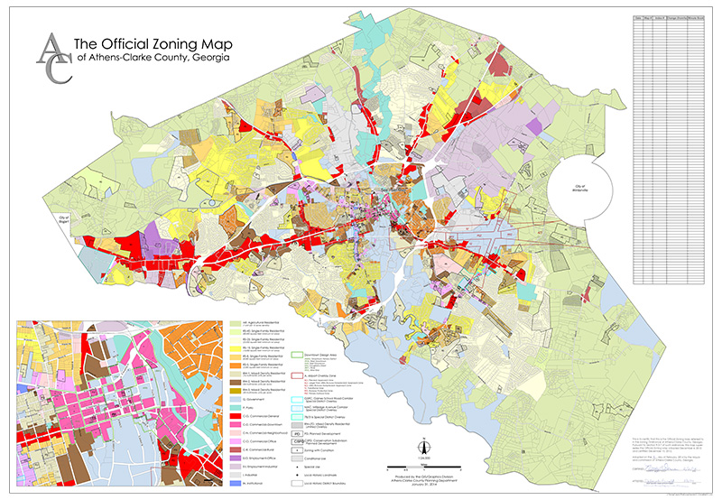
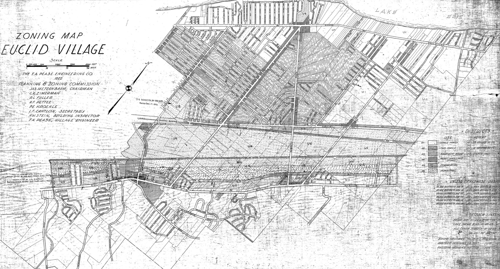
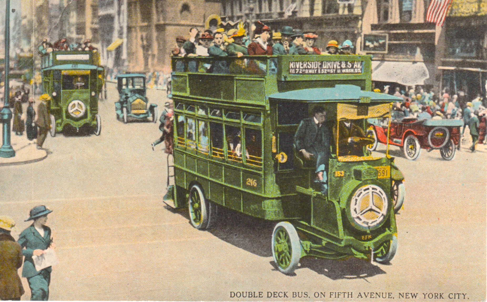
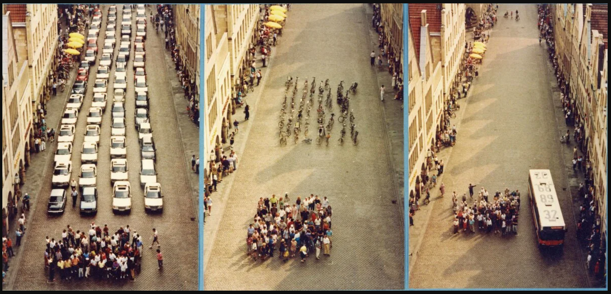
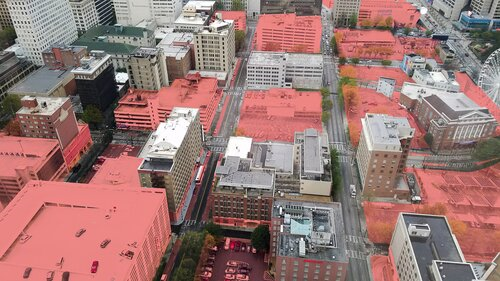
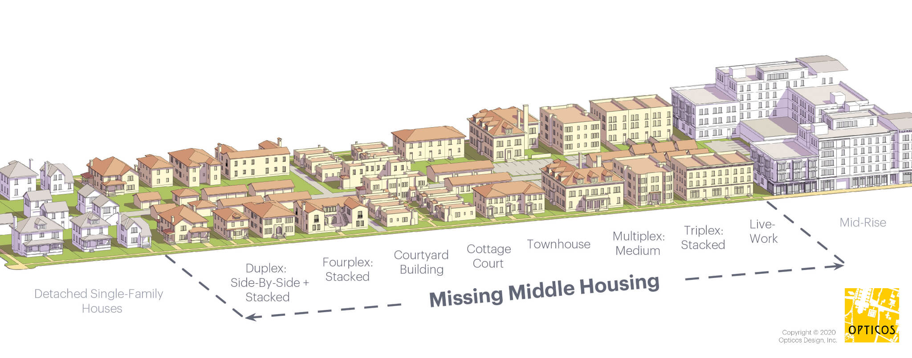
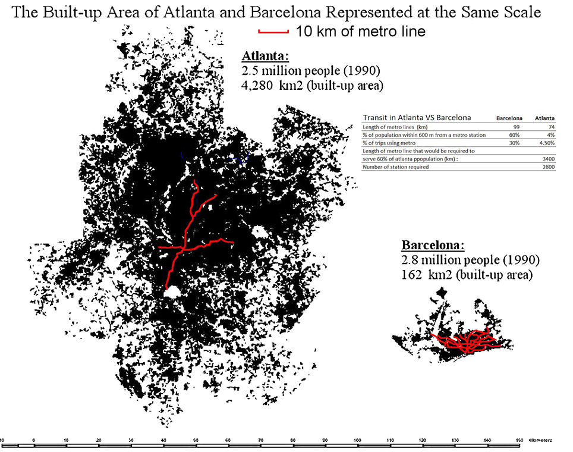

Urban Geometry
POLS 4641: The Science of Cities
Today’s Agenda
Jane Jacobs (1961) argued that great cities require four conditions for diversity:
- Mixed uses — districts must serve more than one primary function
- Short blocks — streets must be frequent and turns easy
- Aged buildings — a mix of old and new buildings of varying condition
- Concentration — a sufficiently dense concentration of people
We’ll use these as a lens to think about the geometry of cities — how the physical arrangement of streets, buildings, and land uses shapes urban life.
Condition 1: Mixed Uses
Why Mixed Uses?
Jacobs argued that a district must serve more than one primary function — ideally more than two — to generate activity at different times of day (Jacobs 1961).
A neighborhood that is only offices empties out at 5pm. One that is only residential empties out at 9am.
Mixed uses ensure there are always people on the street — commuters in the morning, shoppers at midday, diners in the evening, residents at night.
This constant presence creates “eyes on the street” — Jacobs’ famous argument that safety comes not from police but from the ordinary surveillance of neighbors going about their business.
So how did American cities end up banning mixed uses?
Zoning
Zoning
Nearly every city in the United States has a map like this:

Zoning
It didn’t used to be this way…
The Happy Bedtime Story About Zoning

Negative Externalities
Some land uses impose negative externalities on others.
The free market alone has a hard time handling negative externalities. And so the government steps in, using zoning to separate incompatible uses.
Euclid v. Ambler (1926)

The Gritty Rebooted Story

New York, 1880s
New York, 1880s
If you’re new money in 1880s New York City, where do you build your giant mansion?
- 61st Street and 5th Avenue
- (Historical Path Dependence Alert!)

The Internal Combustion Engine Changes Everything
1904-1905:

1917:
Suddenly, industry is not confined to the railyards and the docks, and the apartment buildings are not confined to the streetcar lines!
New York’s First Zoning Map (1916)
Zoning
After Euclid and New York, zoning spreads throughout the country.
States throughout the country pass enabling legislation to allow municipal governments to create zoning codes.
Today, Houston is the only major US city without a zoning code!
In the final two weeks of class, we’ll dive deeper into the politics of zoning and housing policy…
Condition 2: Short Blocks
Why Short Blocks?
Jacobs observed that long blocks — with few intersections and limited route choices — kill foot traffic and concentrate activity on a few arterials.
Short blocks create multiple paths between any two points, spreading pedestrians across many streets.
This generates the foot traffic that supports small businesses, casual encounters, and “eyes on the street.”
Long blocks isolate neighborhoods from one another, creating dead zones.
But cars want long blocks, and in the 20th century we started building cities with longer blocks and wider streets to accommodate them.
Cars Are A Geometry Problem
The fundamental problem with relying on automobiles for urban transportation is one of geometry.
- Land in cities is scarce (basically by definition).

Cars Are A Geometry Problem
The fundamental problem with relying on automobiles for urban transportation is one of geometry.
Land in cities is scarce (basically by definition).
Cars take up a lot of space.

Cars Are A Geometry Problem
Cars Are A Geometry Problem
The fundamental problem with relying on automobiles for urban transportation is one of geometry.
Land in cities is scarce (basically by definition).
Cars take up a lot of space.
All this means that cities with auto-dependent transportation systems waste a lot of valuable land.

The Opportunity Cost of Cars
A growing, car-dependent city needs to set aside more and more land for cars, precisely when that land is getting scarcer and more expensive.
There is an enormous opportunity cost from using that valuable space to move and store cars.
Walk through any city and count the “missing teeth” — surface parking lots, dead frontages, land consumed by automobiles rather than serving as places where people live.
The automobile has dissolved the living tissue of the city. Its appetite for space is absolutely insatiable; moving and parked, it devours urban land, leaving buildings as mere islands of habitable space in a sea of dangerous and ugly traffic. — James Marston Fitch, NY Times, 1960
Traffic Congestion
The irony of all this road building is that it so rarely solves the problem it sets out to solve: traffic congestion.
Can we build our way out of traffic? The intuition: more lanes → less congestion. Right?
Duranton and Turner (2011) find that vehicle kilometers traveled increase proportionately with highway capacity.
They call this the Fundamental Law of Road Congestion.
Double the lane-miles → double the driving. Congestion stays roughly the same.
This is also known as induced demand: making driving easier attracts more driving.
This undermines cost-benefit analyses that assume new roads save commuters time — time that isn’t actually saved in equilibrium.
Congestion Pricing
Traffic congestion is a another tragedy of the commons!
Each driver imposes costs on every other driver, but no one pays for the delay they cause.
If building more roads doesn’t reduce congestion, what does? Charge a price to use the roads.
Congestion pricing charges drivers for using roads at peak times, inducing drivers to carpool or shift off-peak.
The economics are straightforward. The politics are hard.
Congestion Pricing in Practice
Implemented in Singapore (1975), London (2003), and Stockholm (2006).
New York became the first U.S. city to implement congestion pricing in 2025, charging drivers entering Manhattan below 60th Street.
This was after almost 20 years of wrangling in the state legislature, court challenges, and the Trump administration’s last-minute attempts to rescind federal approval.
Congestion Pricing in Practice
Condition 3: Aged Buildings
Why Cities Need Old Buildings
Jacobs’ most counterintuitive argument: cities need old, run-down buildings — not because they’re charming, but because they’re cheap (Jacobs 1961).
New construction is expensive. Only established, high-margin businesses can afford brand-new space.
Old buildings provide low-rent incubator space for the enterprises that make neighborhoods interesting — bookstores, local restaurants, art studios, small manufacturers, startups.
A district with only new buildings will be dominated by chain stores and banks — the businesses that can afford the rent.
Urban Renewal
This connects to our earlier discussion of Urban Renewal.
During this era, it was too easy to seize and redevelop urban land with identically-aged buildings.
Today, the problem is almost the opposite.
It can be so difficult to get the necessary permitting in many cities, that builders default towards large-scale redevelopments.
Condition 4: Concentration
Why Concentration?
Jacobs argued that cities need a sufficiently dense concentration of people — including dense concentration of residents — to support the diversity of uses that makes urban life work (Jacobs 1961).
Density is what makes a corner store, a bus line, or a neighborhood bar economically viable. Without enough people within walking distance, these amenities can’t survive.
Low density forces car dependence – which consumes the very land that could house more people.
Concentration also enables the casual encounters that build social capital. It’s harder to bump into your neighbor if your neighbor lives a mile away.
But zoning codes make concentration illegal in nearly every major American city.
Single-Family Zoning
In most American cities, the vast majority of residential land is reserved exclusively for detached single-family homes.
New York Times maps show that in cities like San Jose, Arlington, and Charlotte, single-family zoning covers 70-90% of residential land.
This isn’t just a personal preference — it’s mandated by law. Duplexes, triplexes, and small apartment buildings are illegal to build on most land.
The result: an artificial scarcity of housing in the places where demand is highest.
The Missing Middle
The gap between single-family homes and large apartment complexes is called the “missing middle” — the duplexes, triplexes, fourplexes, and small apartment buildings that used to be the backbone of urban neighborhoods.

Density and Transit
Low density makes mass transit geometrically prohibitive.
A bus route needs roughly 15-30 housing units per acre to generate enough ridership to justify frequent service.
At suburban densities (~4-6 units/acre), routes are too long, stops too far apart, and ridership too low for the math to work.
This is fundamentally why Atlanta’s MARTA struggles while Barcelona’s metro thrives — it’s not just politics; it’s the underlying geometry of the built environment.

Wrapping Up
Wrapping Up
Jacobs’ four conditions — mixed use, short blocks, aged buildings, concentration — point to the same conclusion: American zoning and transportation policy have systematically outlawed the ingredients of vibrant cities.
The last three weeks of class(!), we discuss two policy areas where zoning codes have the biggest impact:
- Parking
- Housing